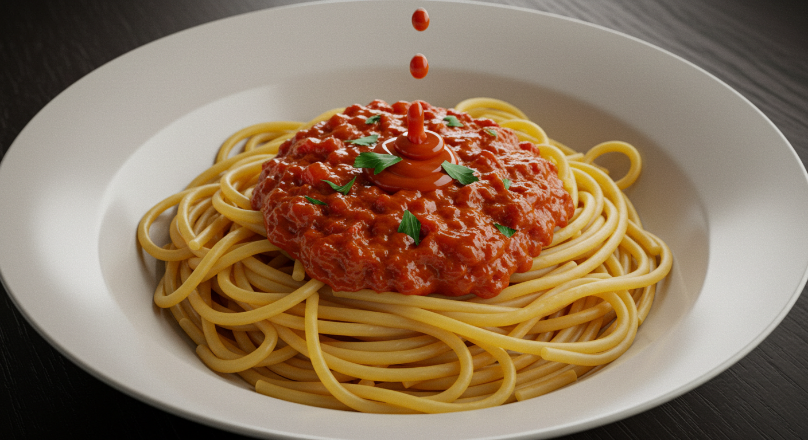

Spaghetti Rosa

Description
A delicious spaghetti dish with a creamy tomato sauce, perfect for a quick weeknight dinner.
Ingredients
- 200g spaghetti
- 1 can (400g) crushed tomatoes
- 1/2 cup heavy cream
- 1 clove garlic, minced
- 1 tablespoon olive oil
- Salt and pepper to taste
- Fresh basil for garnish
Instructions
- Cook spaghetti according to package instructions.
- In a pan, heat olive oil and sauté garlic until fragrant.
- Add crushed tomatoes and simmer for 10 minutes.
- Stir in heavy cream and season with salt and pepper.
- Combine cooked spaghetti with the sauce and mix well.
- Serve hot, garnished with fresh basil.